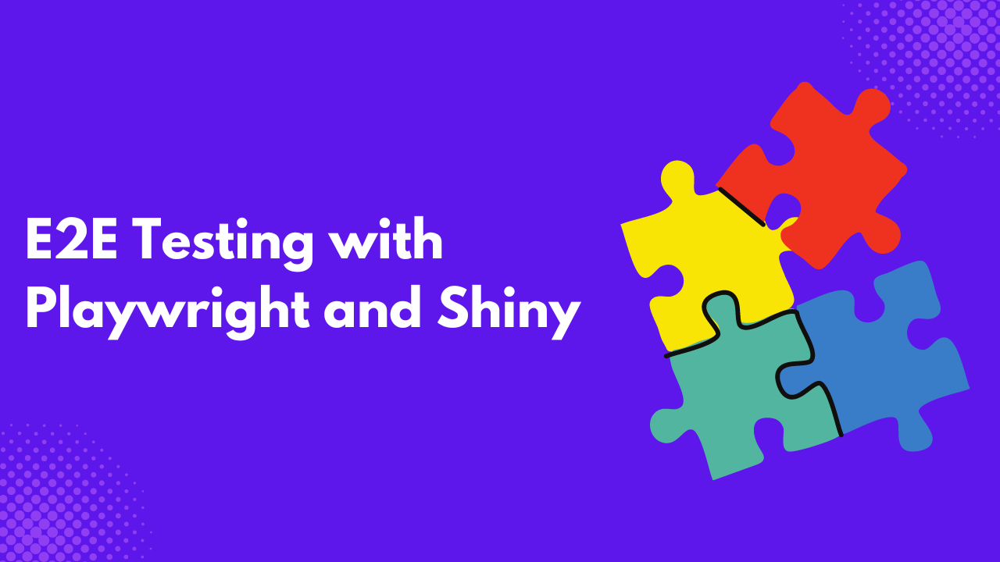

When an application’s code base grows large, it becomes difficult to maintain. Anytime a change is made in the code, some app functionality can break and go unnoticed. This is why writing tests in your Python Shiny applications is essential.
One such test is end-to-end tests (E2E). End-to-end tests help mimic user interactions on an application, such as clicking buttons, file uploads, and browser variations, to ensure that the application’s user interface is working as expected.
This article will teach you how to conduct end-to-end tests on your Python Shiny applications using Playwright, an open-source automation framework for testing web applications.
What is Playwright
Playwright is an automation framework used to test web applications across different browsers. It automates browser interactions with an application, just as a user would if they were to use the application. Playwright was built on Node.js but is also available as a Python library.
Benefits of End-to-end testing with Playwright.
- Wide Support and Compatibility: Playwright works with almost all operating systems and major browsers and has libraries in major programming languages.
- Resilience and Dynamic Wait Times: Some elements or interactions can take time to load. Playwright features auto-wait for these elements or interactions, hence preventing unnecessary timeouts.
- Test Isolation: Playwright simulates a browser environment in a new tab. This allows you to run multiple tests on different sessions of the applications.
A Basic Python Shiny Example
Let’s build a simple web application using the affairs dataset from the statsmodels library. Ensure you have the following libraries installed.
pip install statsmodels pandas shinyIn your project directory, create a new file called utilis.py. This file will contain the function that filters the affairs dataset based on an individual’s age and number of children.
import statsmodels.api as sm
# Load the dataset from statsmodels (Affair dataset on extramarital affairs)
data = sm.datasets.fair.load_pandas().data
# Function to filter data based on inputs
def filter_data(age_range, kids_range):
return data[(data["age"] >= age_range) & (data["children"] <= kids_range)]Create another file, main.py, that will contain the code for the Python Shiny application.
from shiny.express import input, render, ui
from utilis import filter_data
# Add UI elements
with ui.card():
ui.h2("Extramarital Affairs Dataset (Fair)"),
ui.input_slider("age", "Age Filter", 15, 60, 20)
ui.input_slider("kids", "Number of Kids", 0, 5, 2)
# Table output
with ui.card():
@render.table
def filtered_table():
filtered = filter_data(input.age(), input.kids())
return filtered.head(10) # Display first 10 rowsThe code above creates a shiny application that takes in two user inputs: age and kids. This now returns the first ten rows of the filtered dataset. Run the following code to view the application
shiny run --reload main.pyIntegrating Playwright with Python Shiny
To use Playwright, you must install the Playwright Python library and Pytest.
pip install pytest pytest-playwrightJust like unit tests, all end-to-end test files must have a test prefix or suffix. Create a test file test_app.py, and paste the following code to see if the table output in the application appears as expected.
from shiny.playwright import controller
from shiny.run import ShinyAppProc
from playwright.sync_api import Page
from shiny.pytest import create_app_fixture
from utilis import filter_data
app = create_app_fixture("./main.py")
test_data = filter_data(28, 4).head(10)
n_row = test_data.shape[0]
n_col = test_data.shape[1]
columns_names = [*test_data.columns]
def test_table(page: Page, app: ShinyAppProc):
page.goto(app.url)
table = controller.OutputTable(page, "filtered_table")
slider_1 = controller.InputSlider(page, "age")
slider_2 = controller.InputSlider(page, "kids")
slider_1.set("28")
slider_2.set("4")
table.expect_column_labels(columns_names)
table.expect_ncol(n_col)
table.expect_nrow(n_row)Here is a breakdown of the above code:
- First of all, the
controllermodule is imported. This controls the shiny components and mimics browser interactions on the Python shiny application. pageis an instance of thePageclass, representing a single tab on the browser.appis an instance of theShinyAppProcclass, representing the Python Shiny application.- The function
test_tableis designed to mimic user interaction with the inputs to generate an output table. It is always good practice to ensure that your tests cover a single functionality. - The
controller.OutputTableandcontroller.InputSliderare methods from thecontrollermodule that mimic human interaction. Here is a list of all the available shinycontrollerclasses and methods. - The
.setmethod sets a value for each controller, just like a user will set it on the browser. - The
.expect_column_labels,expect_ncol, and.expect_nrowmethods are all specific to thecontroller, InputSlider. They check whether a table has the proper column labels and dimensions.
Type pytest on the command line, and click enter to run.

You can see that the test was successful. If the number of expected columns, rows, or label names provided does not match what the application is displaying, the test will fail and also give a reason for the failure.

End-to-end Testing Best Practices
- Define Workflows to Test: When writing E2E tests, you need to define the parts of the application that you want to cover. It is unrealistic to say you want to write a test covering 100% of the application.
- Simulate Real-World User Experience: Ensure that any test you write simulates what users will realistically do, such as button clicks, file uploads, and so on.
- Use Descriptive Names: When creating test files and test functions, ensure you use descriptive names. This ensures anyone viewing the code understands what’s going on. Make sure the names of the test functions relate to the function of the application being tested.
- Conduct Cross-browser Testing: Ensure you test all relevant browsers to ensure users can access your applications from various browsers.
- Automate Tests: Ensure you integrate CI/CD workflows into your code, using tools like GitHub Actions, Jenkins, Circle CI, and others to run automated tests anytime a commit is made.
Conclusion
In this article, you have learned about E2E tests and how to write E2E tests with Playwright in your Python Shiny applications. E2E tests only covers user interactions, what if you want to test your business logic, such as calculations in your applications. This is where unit tests come into place, Check out How to Conduct Unit Tests in Python Shiny with Pytest to learn more.
If you want to learn more about Playwright, here are some resources that are of help.
- Playwright Best Practices
- How to perform End to End Testing using Playwright
- Playwright End to End Testing: Complete Guide
- Playwright: Fast and reliable end-to-end testing for modern web apps
Need Help with Data? Let’s Make It Simple.
At LearnData.xyz, we’re here to help you solve tough data challenges and make sense of your numbers. Whether you need custom data science solutions or hands-on training to upskill your team, we’ve got your back.
📧 Shoot us an email at admin@learndata.xyz—let’s chat about how we can help you make smarter decisions with your data.